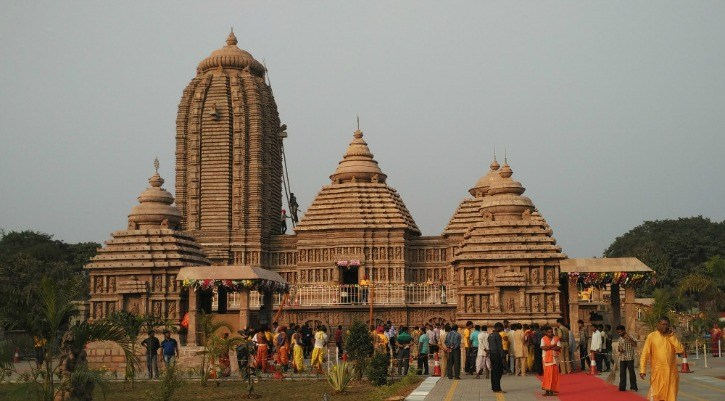

|
 |
Puri is known by several names since the ancient times, and was locally known as "Shrikhetra" and Lord Jagannath temple is known as "Badadeula". Puri and the Jagannath Temple were invaded 18 times by Hindu and Muslim rulers, from the 4th century AD till the early 19th century with the objective of looting the treasures of the temple. Odisha, including Puri and its temple, were under the British Raj from 1803 till India attained independence in August 1947. Even though princely states do not exist in India today the heirs of the Gajapati Dynasty of Khurda still perform the ritual duties of the temple. The temple town has many Hindu religious maths or monasteries.
The economy of Puri town is dependent on the religious importance of the Jagannath Temple to the extent of nearly 80 percent. The 24 festivals, including 13 major ones, held every year in the temple complex contribute to the economy; Ratha Yatra and its related festivals are the most important which are attended by millions of people every year. Sand art and applique art are some of the important crafts of the city.
Puri has been chosen as one of the heritage cities for Heritage City Development and Augmentation Yojana (HRIDAY) scheme of Government of India.
|